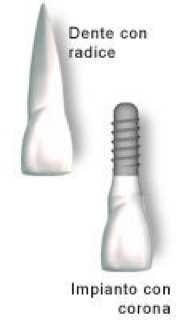
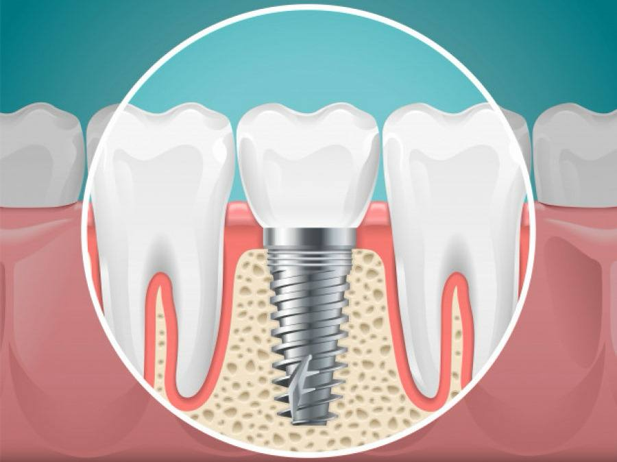
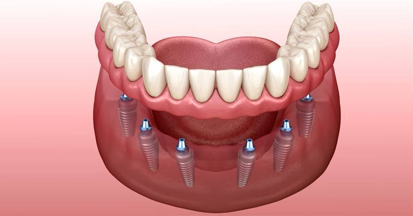
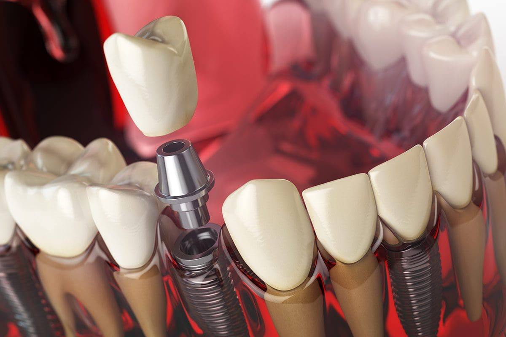

Gli impianti dentali possono essere definiti delle radici artificiali sostitutive delle radici dei denti naturali che non ci sono più.
Gli impianti forniscono una solida base per delle protesi fisse (corone dentali o ponti) oppure anche per delle dentiere rimovibili dallo stesso paziente per l’igiene quotidiana.
oppure anche per delle dentiere rimovibili dallo stesso paziente per l’igiene quotidiana.
Il cuore dell’impianto è una vite metallica (molto spesso in Titanio, manon solo) che, con un semplice intervento chirurgico eseguito ambulatorialmente dal dentista in anestesia locale, viene inserita nell’osso mascellare o mandibolare.
Se l’intervento ha successo (la percentuale di impianti riusciti inpazienti in buona salute è superiore al95%) la vite risulterà totalmente integrata all’osso. In questo modol’impianto fornirà un eccellente puntodi fissaggio per la protesi che verrà montata sulla testa della vite che spunterà dalla gengiva (come detto,potrà essere una corona, un ponte ouna protesi mobile).In generale si può affermare concertezza che gli impianti rappresentano un enorme passo avanti nella qualità di vita di milioni di persone.
Sugli impianti dentali, sono avvitate delle protesi, siano essi una corona o un ponte, esse sono praticamente indistinguibili dai denti naturali.
Inoltre gli impianti sono progettati per “fondersi” con l’osso (osteointegrazione) e quindi per accompagnarci il più a lungo possibile, anche tutta la vita. Da non sottovalutare anche l’aspetto della riduzione ossea: infatti l’inserimento di uno o più impianti fa sì che il processo naturale di perdita dell’osso in zone edentule si arresta.
Un impianto dentale è costituito da tre parti principali: